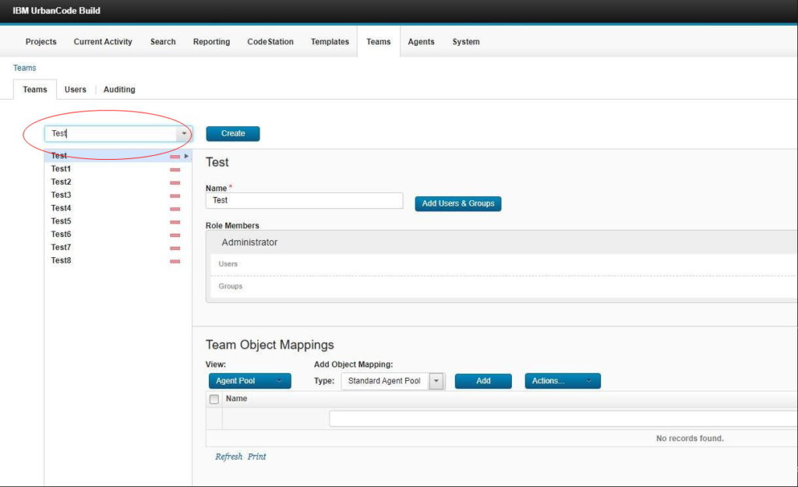

This article was originaly published in 2020.03.17
6.1.6.1
This release of IBM UrbanCode Build is a maintenance release and includes various bug fixes and enhancements. This release is recommended for all customers.
New features
User interface enhancement
On the Team page, selecting a team from the list is faster. Instead of scrolling for a team name, you can filter the list to narrow your search using the text box above the list of teams.

Enhancement to the Visual Studio plug-in
The Mode property in the Visual Studio plug-in has been changed to allow custom values. Prior to this enhancement, the only values were Release and Debug.

Support for automatic Agent upgrade on z/OS
When upgrading UrbanCode Build, agents residing on a z/OS system can be automatically upgraded as part of the install process.
Java version check
Java Version 8 or later is required to run the UrbanCode Build server. A verification check is done when the UrbanCode Build server is started. An error message is displayed if Java Version 8 or later is not detected
Software upgrades
The UrbanCode Build server runs on Apache Tomcat. The integrated Apache Tomcat level has been upgraded to version 8.5.51.